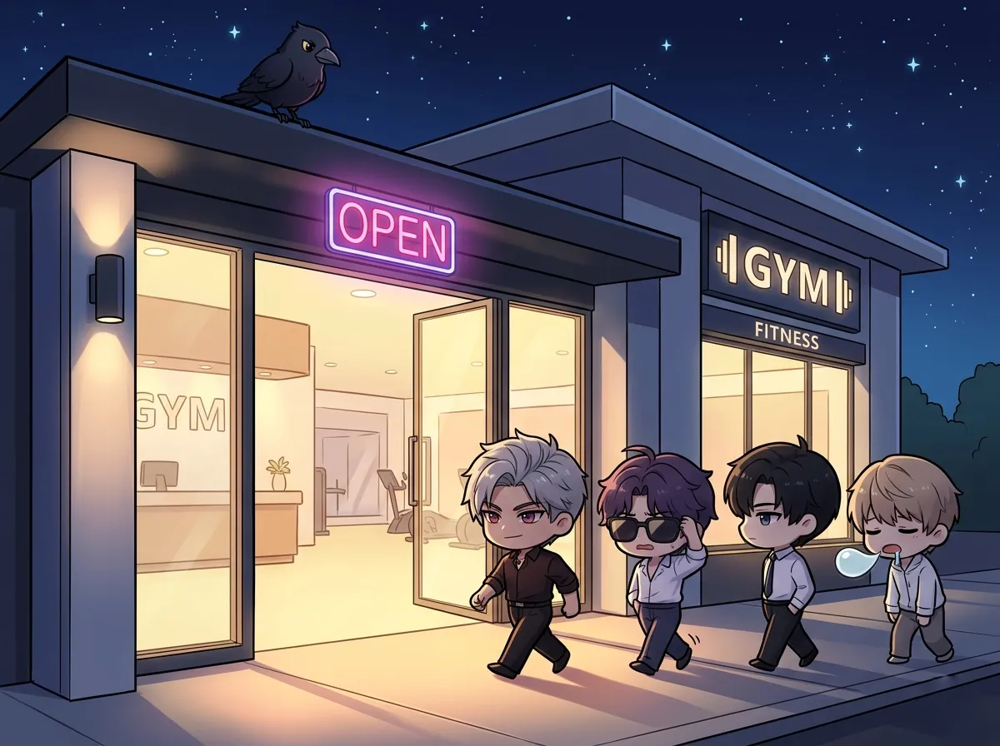
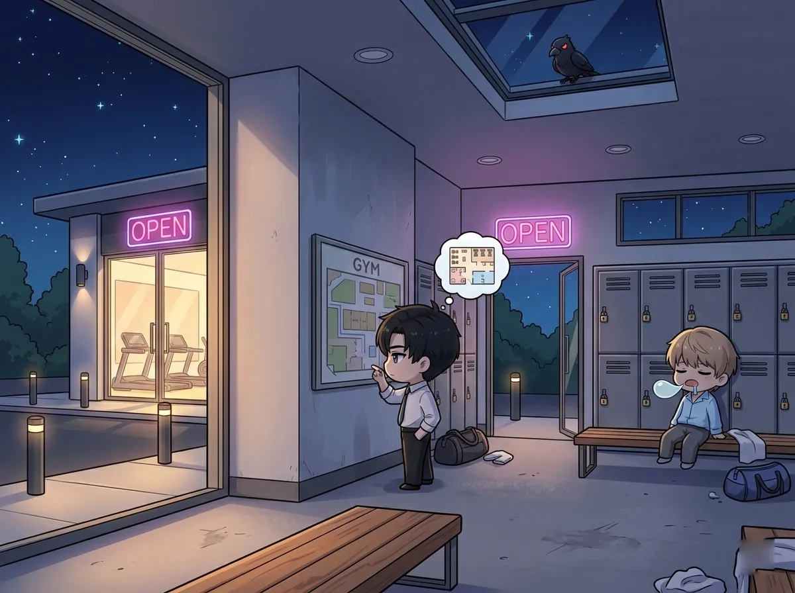
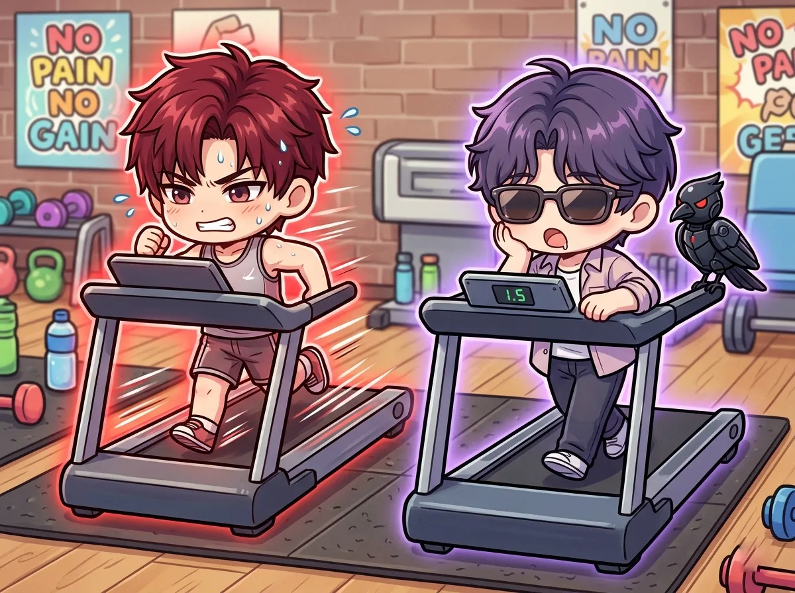
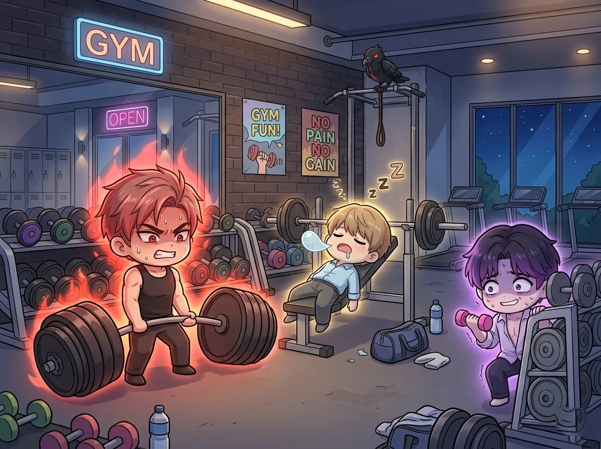
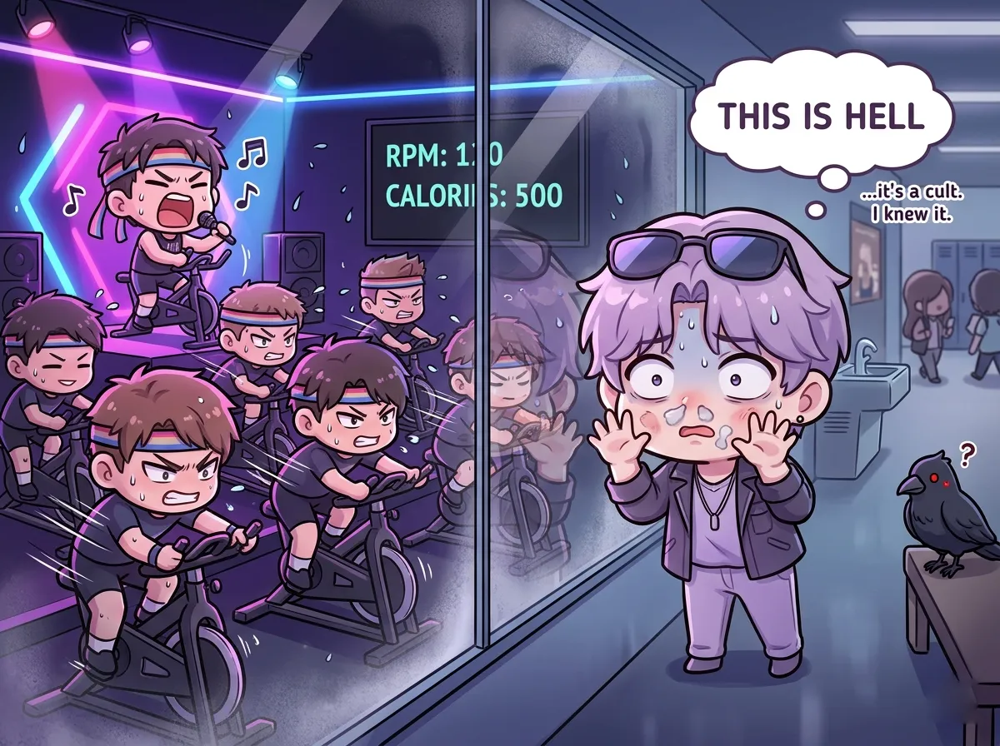
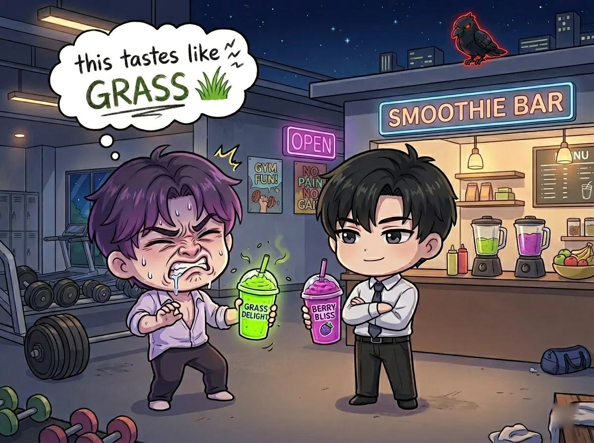
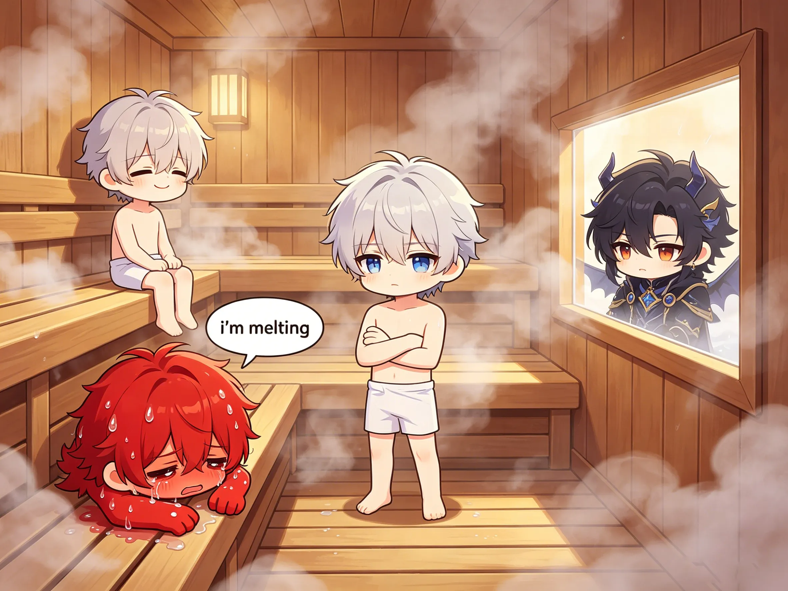

or: four men, one gym, zero muscle memory
it started, as most disasters do, with sylus.
"we should go to the gym," he said.
rafayel laughed. then realized he wasn't joking.
this is what happened next.

sylus arrived first. black gym clothes. black towel. black water bottle. (he brought his own.)
he stood by the front desk. arms crossed. evaluating the equipment layout.
(he had already studied the floor plan online.)
zayne arrived second. wearing professional athletic wear. the kind that costs more than rafayel's rent.
"you actually came," said sylus.
"i had to," said zayne. "you'd never let me forget it."
"true."
rafayel arrived third. wearing sunglasses. inside. again.
"i'm here under protest," he announced.
"noted," said sylus.
"i'm not actually working out. i'm just observing."
"that's what they all say."
xavier arrived fourth. twenty minutes late. he had fallen asleep in the locker room.
"there are benches in there," he explained.
"they're for changing," said rafayel.
"they're also for sleeping."
"let's go," said sylus.
and they went.

zayne found the locker room map. (he studied it.)
rafayel couldn't figure out the lock. he tried his birthday. then his art gallery opening date. then 1234.
it didn't work.
"just pick one," said zayne.
"i have a system."
"your system is failing."
xavier sat down on another bench.
"xavier, no," said rafayel.
"i'm just resting."
"we haven't started."
"i know. the walk from the entrance was long."
sylus was already changed. he was waiting by the door.
"you're all slow," he said.
"you arrived pre-changed," said rafayel.
"i'm efficient."
"you're terrifying."
sylus smiled. rafayel regretted speaking.

sylus started on the treadmill. speed: intimidating.
he ran like he was chasing someone. (he probably was.)
rafayel got on the treadmill next to him. set the speed to 2.0.
"that's walking," said zayne.
"i know. i'm enjoying the scenery."
"the scenery is a wall."
"it's a nice wall."
xavier got on a treadmill. set the speed to 1.5. lasted four minutes.
"i'm done," he announced.
"you've gone two hundred meters," said zayne.
"it felt like two hundred miles."
he found a bench. sat down. (the benches in the cardio section were less comfortable. he stayed anyway.)
zayne used the elliptical. perfect form. controlled breathing. he looked like he was performing surgery.
"you're doing that wrong," said a trainer who walked by.
"no i'm not," said zayne.
"your elbows are—"
"they're fine."
the trainer left. (zayne was right.)

this is where sylus belonged.
he lifted. silently. methodically. each rep precise.
rafayel watched from a safe distance.
"are you going to help?" asked zayne.
"i'm supervising."
"you're hiding."
"supervising AND hiding. multi-tasking."
xavier found a bench press. lay down. stared at the ceiling.
"are you going to lift?" asked rafayel.
"i'm contemplating."
"you're napping."
"contemplative napping."
he didn't lift. he just lay there. for fifteen minutes.
a gym member asked if he was done.
"no," said xavier. "i'm still contemplating."
the member left.
zayne attempted a deadlift. his form was perfect. his face was red.
"you don't have to prove anything," said rafayel.
"i'm not proving anything."
"you're turning purple."
"it's called effort."
sylus added more weight.
rafayel decided to try a bicep curl. with the smallest dumbbell. (the pink one.)
he did one rep. put it down.
"done," he said.
"that was one," said zayne.
"quality over quantity."
"there was no quality."
rafayel ignored him.

they passed a spin class. loud music. enthusiastic instructor. people sweating in unison.
rafayel pressed his face against the glass.
"it's like a cult," he whispered.
"it's exercise," said zayne.
"same thing."
the instructor noticed them. waved. smiled.
"come join us!" she shouted.
rafayel stepped back. "no."
"sylus would love it," said zayne.
sylus's expression didn't change. "i would not."
"you love efficiency. spin class is efficient cardio."
"i hate people."
"ah."
they moved on.
xavier had wandered into a yoga class by accident. he was lying on a mat. eyes closed.
"xavier," said rafayel.
"shh. we're meditating."
"you're sleeping again."
"it's the same thing."
the yoga instructor was very understanding. (she was not.)

rafayel found the smoothie bar first.
"finally, something good," he said.
he ordered something with kale. and spirulina. and seven other things he couldn't pronounce.
it was green. very green.
"this tastes like grass," he said after one sip.
"you ordered grass," said zayne.
"i ordered health."
"same thing."
sylus ordered black coffee. (the gym had coffee. he was pleased.)
xavier asked for water. then fell asleep waiting for it.
the cashier had to wake him up twice.
"here's your water," she said.
"thank you," said xavier. "i'm going to sit down now."
he did.
rafayel drank his grass smoothie. slowly. miserably.
"i hate this," he said.
"you can stop," said zayne.
"i paid for it."
"sunk cost fallacy."
"i don't care. i'm finishing it."
he didn't finish it.

zayne found the sauna. "this is the best part," he said.
"it's a hot room," said rafayel. "how is that the best part?"
"you don't have to move."
rafayel considered this. "okay. i'm in."
they sat in the sauna. five minutes. ten minutes.
"i'm bored," said rafayel.
"that's the point."
"boredom is not the point."
"boredom is the point."
sylus joined. he sat in silence. didn't sweat. (how.)
"are you even human?" asked rafayel.
sylus didn't answer.
"that's not a no."
xavier was still in the locker room. he had found another bench.
they left three hours later. rafayel could barely walk. (he had done one bicep curl.)
zayne was already planning his next visit. (he wouldn't go.)
sylus looked the same as when he arrived. (infuriating.)
xavier was asleep in the car. (again.)
"today wasn't terrible," said rafayel.
"you said that last time," said sylus.
"it keeps being true."
"don't ruin it."
rafayel smiled. "i'm just saying—"
"don't."
zayne sighed. "we're doing this again, aren't we."
"probably," said sylus.
"unfortunately," said rafayel.
from the back seat, xavier mumbled: "the benches were nice."
"go back to sleep," said rafayel.
xavier did.
the car pulled out of the parking lot. the gym grew small in the rearview mirror.
none of them would admit they'd had fun.
(they had.)